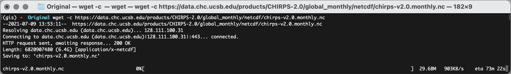
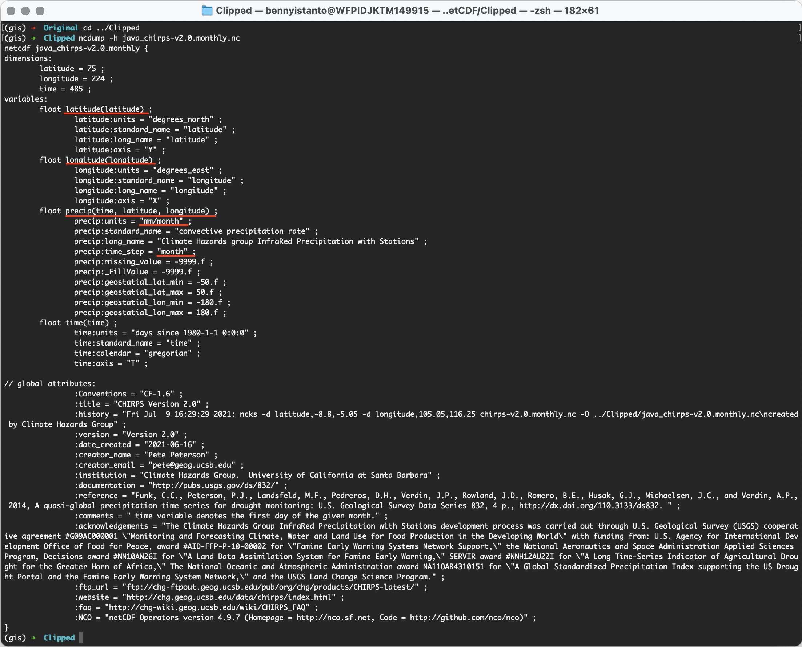
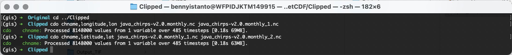
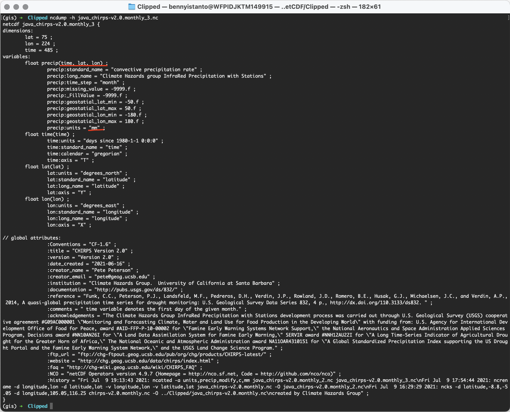

3.3. CHIRPS monthly in netCDF format
This section will explain on how to download CHIRPS monthly data in netCDF format and prepare it as input for SPI calculation.
- Make sure you still inside conda
gisenvironment
Download CHIRPS data
- Navigate to
Downloads/CHIRPS/netCDF/Originalfolder in the working directory. Download usingwgetall CHIRPS dekad data in netCDF format from Jan 1981 to Apr 2021 (this is lot of data +- 6.4GB, please make sure you have bandwidth and unlimited data package). Paste and Enter below script in your Terminal.
wget -c https://data.chc.ucsb.edu/products/CHIRPS-2.0/global_monthly/netcdf/chirps-v2.0.monthly.nc

- As an alternative, you can download via ftp client like FileZilla. Below is exampe using ftp client Transmit for Mac.

Clip data using a bounding box based on area of interest
I am providing example on how to use CDO and NCO to do some data extraction process, you can choose which one is suits you. In my opinion, NCO is faster than CDO, and NCO produce smaller size of output.
- Crop your area of interest using bounding box.
Example: Java bounding box with format
lon1,lon2,lat1,lat2is105.05,116.25,-8.8,-5.05
Paste and Enter below code in your Terminal.
CDO script:
cdo sellonlatbox,105.05,116.25,-8.8,-5.05 chirps-v2.0.monthly.nc ../Clipped/java_chirps-v2.0.monthly.nc

NCO script
ncks -d latitude,-8.8,-5.05 -d longitude,105.05,116.25 chirps-v2.0.monthly.nc -O ../Clipped/java_chirps-v2.0.monthly.nc

- Let's read header contents of above result. Type and execute below code:
ncdump -h java_chirps-v2.0.monthly.nc
You will get information (dimension, variables and global attribute) about the data.

Edit variable and attribute
As explain in Input specification, we can say from above picture there are few variable and attribute that need editing. Let's do it one-by-one.
- Navigate to
Downloads/CHIRPS/netCDF/Clippedfolder in the working directory.
Variable
- Edit variable name for
longitudetolon, andlatitudetolat
Paste and Enter line-by-line CDO script below in Terminal.
cdo chname,longitude,lon java_chirps-v2.0.monthly.nc java_chirps-v2.0.monthly_1.nc
cdo chname,latitude,lat java_chirps-v2.0.monthly_1.nc java_chirps-v2.0.monthly_2.nc

Alternative, using NCO script is below
ncrename -d longitude,lon -d latitude,lat -v longitude,lon -v latitude,lat java_chirps-v2.0.monthly.nc -O java_chirps-v2.0.monthly_2.nc

- Let's read header contents of above result. Type and execute below code:
ncdump -h java_chirps-v2.0.monthly_2.nc
Result from CDO

Result from NCO

Attribute
- Edit precipitation unit from
mm/monthtomm
Paste and Enter line-by-line CDO script below in Terminal.
cdo -setattribute,precip@units="mm" java_chirps-v2.0.monthly_2.nc java_chirps-v2.0.monthly_3.nc

Alternative, using NCO script is below
ncatted -a units,precip,modify,c,'mm' java_chirps-v2.0.monthly_2.nc java_chirps-v2.0.monthly_3.nc

- Let's read header contents of above result. Type and execute below code:
ncdump -h java_chirps-v2.0.monthly_3.nc
Result from CDO

Result from NCO

And the units already in mm
Once this has completed, the dataset can be used as input to this package for computing SPI. From above picture, some of the precipitation attribute are still wrong: DimensionNames and Units. I can leave it as is, SPI code will only read units and variables precip(time,lat,lon)
As the input data preparation is completed, move the file java_chirps-v2.0.monthly_3.nc to main folder Input_nc and rename into java_cli_imerg_1months_1981_2020.nc
mv java_chirps-v2.0.monthly_3.nc ../../../../Input_nc/java_cli_imerg_1months_2000_2020.nc
Make sure the file java_cli_imerg_1months_1981_2020.nc is available at Input_nc folder